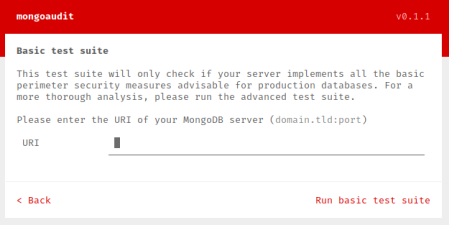

MongoDB
MongoDB is a NoSQL database
By default the MongoDB installs with NO
password credentials.
By default, MongoDB starts at port
27017.
But you can
access it in a web browser not at that port, rather, at a port number 1000 more than the port at which MongoDB is
started. So if you point your browser to http://localhost:
28017, you can see MongoDB web
interface.
Tools:
•
https://github.com/stampery/mongoaudit •
https://github.com/codingo/NoSQLMap.git
root@kali:/# git clone https://github.com/codingo/NoSQLMap.git
root@kali:/# cd NoSQLMap
root@kali:/# python setup.py install
root@kali:/# ./nosqlmap.py
interactive mode → First set the options with 1
• Metasploit module: use
auxiliary/scanner/mongodb/mongodb_login
Bibliography:
https://medium.com/@greedybucks/accessing-unauthenticated-mongodb-database-using-shodan-e62acc4a2922